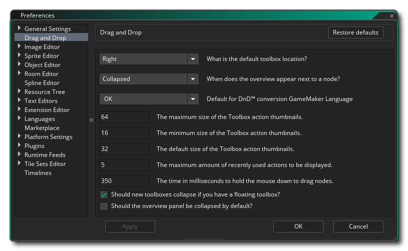

The Drag and Drop Preferences are used to define how the Drag and Drop script editor looks and feels. The different options available are listed below along with a description of what each one does.
- DnD™ toolbox default location: By default the DnD™
toolbox (where all the different action libraries are held) is
placed on the right of the Editor, but you can use this option to
have it default to the left.
- DnD™ node overview visibility mode: A node "overview" is
the short descriptive text that appears beside certain actions in
the Action Workspace, for example this Destroy Instance
action:
 You can choose to enable these
always, enable them only if the action is collapsed (the default
setting), or disable them altogether.
You can choose to enable these
always, enable them only if the action is collapsed (the default
setting), or disable them altogether.
- Automatic response to DnD™ conversion to GameMaker
Language: When you convert a Drag and Drop event or script into
GML code, you will by default get a message warning you about what
you are about to do and asking if you want to continue. Setting
this option to "OK" will simply okay the change without showing the
message.
- Automatic response to DnD™ node deletion: When you
delete a Drag and Drop event node, you will by default get a
message warning you about what you are about to do and asking if
you want to continue. Setting this option to "OK" will simply okay
the deletion without showing the message.
- Maximum size for DnD™ toolbox action thumbnails: At the
bottom of the Action Toolbox you have a slider for changing the
size of the Drag and Drop icons. This setting will be used to
define the maximum permitted size (default 64px).
- Minimum size for DnD™ toolbox action thumbnails: At the
bottom of the Action Toolbox you have a slider for changing the
size of the Drag and Drop icons. This setting will be used to
define the minimum permitted size (default 16px).
- Default size for DnD™ toolbox action thumbnails: This
setting will be used to define the default size for all action
icons in the toolbox (default 32px).
- Maximum number of recently used actions to display: In
the action toolbox there is a library at the top which holds the
actions you have most recently used. You can use this option to
change the maximum number of recent actions that will be shown
(default 5).
- Mouse down time to start dragging nodes (ms): When you
click on a node and drag it, you will be repositioning the node
within the action code. However if you hold the mouse down for a
moment and then move, you will be moving the node position within
the workspace but not within the order of the code. This
setting sets the number of milliseconds to have to wait with the
mouse button pressed before the node can be moved (not
repositioned). Default is 350.
- Hide DnD™ node overview panel: Here you can choose to hide the overview panel of the Action Code Editor. By default this is disabled and enabling it will remove the plain text list of action chains from the editor.